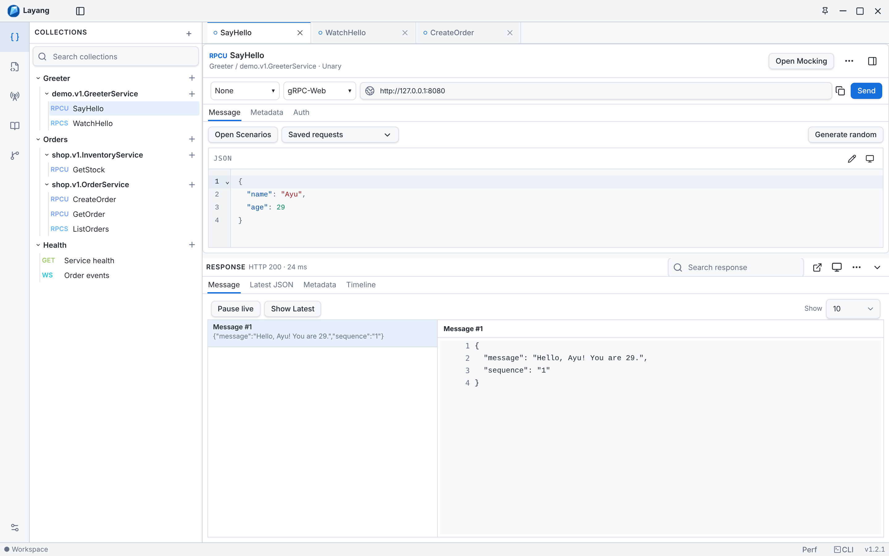
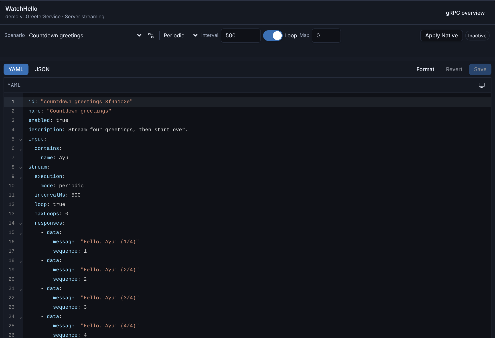

Desktop app and CLI for gRPC, gRPC-Web, WebSocket and REST
gRPC requests you can commit.
Layang keeps requests, proto revisions, mocks and docs as YAML files in a workspace folder. The desktop app and the CLI open the same folder, so the request you debug at your desk is the one CI runs.
version: 2 kind: request info: name: Say Hello protocol: grpc request: url: localhost:50051 grpc: method: demo.v1.GreeterService/SayHello body: name: Ayu age: 29 assertions: grpcStatus: OK
$ layang run ./workspace --request "Say Hello" ✓ demo.v1.GreeterService/SayHello (11ms) ✓ grpcStatus: expected 0, received 0 Done: 1/1 passed, 0 failed.
One window for the proto, the call and the stream.
Pick a method from the imported proto, edit the body against its message type, and read responses, metadata and each streamed message as it arrives.

From a .proto file to a check in CI.
Each step writes plain files into the workspace. Use the desktop app or the CLI for any of them; both read and write the same files.
-
1
Import the proto
Layang stores an immutable revision, so a request stays pinned to the schema it was written against.
layang schema:import ./workspace --file samples/greeter.proto -
2
Send a request
Unary or server-streaming, over native gRPC or gRPC-Web, with metadata, deadlines and assertions.
layang run ./workspace --request "Say Hello" -
3
Mock the method
Each scenario is its own YAML file. Start the mock server locally for the frontend team or for tests.
layang mock:start ./workspace --protocol grpc -
4
Commit and check
Review the diff like any other code. CI validates the workspace and runs the saved requests.
layang validate ./workspace --json
A streaming mock is a file you can read.
This scenario answers WatchHello for Ayu with three messages, half a second apart, and plays the list twice. Edit it in the app or in your editor, then apply it to the running server.
inputUse this scenario only when the request matches: equals, contains, matches (regex), glob or headers.
intervalMsTime between streamed messages. A single response can set its own delayMs.
maxLoops: 1Restarts once after the first full pass, so the list plays twice. 0 keeps streaming until the client cancels.
Live PushKeep the stream open and send the next saved response by hand while you watch the client.
name: Two passes enabled: true input: contains: name: Ayu stream: execution: mode: periodic intervalMs: 500 loop: true maxLoops: 1 responses: - data: { message: Hello, sequence: 1 } - data: { message: Still here, sequence: 2 } - data: { message: Bye, sequence: 3 }

What is in the folder.
Everything a teammate needs is tracked. Open tabs, window layout, absolute import paths and the last environment you used stay in .layang/, which the workspace .gitignore excludes, so opening a request never creates a diff.
| layang.yml | tracked | Workspace name and file format versions. |
| collections/ | tracked | One YAML file per request, named by protocol: say-hello.grpc.yml, login.rest.yml, events.websocket.yml. |
| protos/ | tracked | Immutable proto revisions with checksums. Changed sources become a new revision. |
| environments/ | tracked | Targets and variables per environment. |
| mocks/ | tracked | gRPC scenarios, one file each, plus REST and WebSocket mock configuration. |
| docs/ | tracked | Notes you write and the static site layang docs:build generates. See an example. |
| .layang/ | ignored | Machine-local state that should not reach your teammates. |
What each transport supports.
Listed as it works in v1.2.1, including what the desktop app does not do yet.
| Transport | Desktop app | CLI | Local mock |
|---|---|---|---|
| Native gRPC | Unary and server-streaming | Unary, server, client and bidirectional streaming | Unary and server-streaming, with TLS and mTLS |
| gRPC-Web | Unary and server-streaming | Unary and server-streaming | Gateway in front of the mock, or a proxy to a real upstream |
| WebSocket | Connect, send and watch live events | Run saved requests | Push on connect, replies to matching messages, manual send |
| REST | Requests with params, headers, auth and body | Run saved requests | Path, query, header and body matching, with delays |
The same workspace runs in CI.
The standalone CLI bundles its own Node runtime. Unpack it on a runner, validate the workspace, start the mocks and fail the build when a saved request stops matching its assertions.
- name: Check API workspace
run: |
layang validate ./workspace --json
layang mock:start ./workspace --protocol grpc --daemon
layang run ./workspace --reporter junit --output api.xml
layang mock:stop ./workspace
Download v1.2.1
Builds for Windows and Linux are on GitHub Releases. macOS builds are not published yet.
Windows
- LayangSetup.exe
- Portable .zip
The installed app updates itself when a new release is published.
Get the Windows buildLinux
- .deb
- .rpm
- Portable .zip
No automatic updates on Linux. Install the newer package to upgrade.
Get the Linux buildCLI only
- layang-cli-windows-x64.zip
- layang-cli-linux-x64.tar.gz
For CI runners and servers. Each archive has a .sha256 file next to it.
$ sha256sum layang-cli-linux-x64.tar.gz compare the hash with the first field of layang-cli-linux-x64.tar.gz.sha256